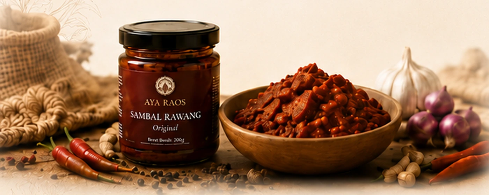
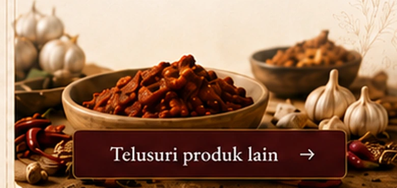
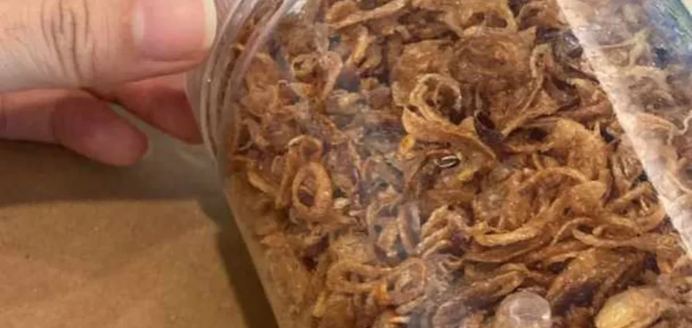

SEDERHANA
Tidak dibuat rumit.
Rumah besar tiga lini AYA. Sebelum memilih produk, kenali dulu makna, fungsi, dan dunia yang menyatukan semuanya.
Rumah bagi AYA Spice Haven, AYA Farm, dan AYA Snacks & Drinks.


SATU NAMA · TIGA DUNIA
RASA
Setiap lini AYA memiliki peran dan fungsi berbeda, namun saling melengkapi untuk menghadirkan pengalaman rasa yang utuh dan bermakna. Dari hasil bumi dan produk primer, menuju olahan berbumbu, hingga camilan dan minuman yang siap dinikmati dalam keseharian.
Temukan produk yang dekat dengan kebutuhan Anda, lalu dengarkan bagaimana AYA hadir di meja dan momen keseharian mereka.

Beragam pilihan produk AYA untuk kebutuhan dan momen keseharian Anda.
Telusuri produk lain →
Cerita nyata dari mereka yang telah menjadikan AYA bagian dari meja dan momen berharga.
Dengar perjalanan rasa mereka →
Rasa yang dekat dengan keseharian. Produksi batch kecil · Area utama Lippo Utara & Jabodetabek · Lead time 2–3 hari setelah pembayaran diterima.
 TUMBUH
TUMBUH

 DIOLAH
DIOLAH

 DINIKMATI
DINIKMATI